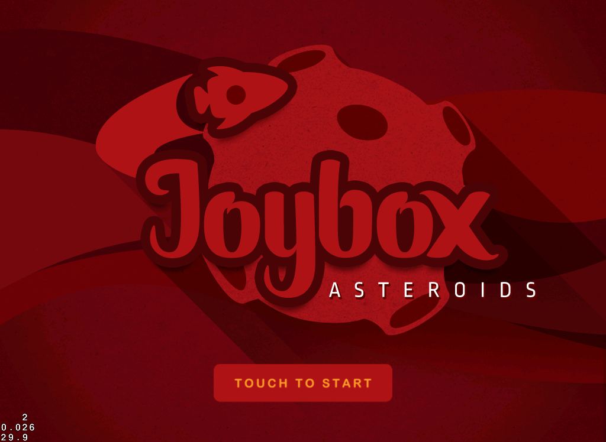

Don't push the red button
In the previous round we create a simple scene, containing the background of our game menu, which looks something like the following:
rake

The first thing we need to do is download the required assets for this tutorial: Round 2 Assets, and place them in the resources folder.
Menu Image
The Menu Image object will allow us to present a button on the screen, please open the menu_layer.rb file and add the following into the on_enter method:
start_button = MenuImage.new image_file_name: 'sprites/menu/start.png',
selected_image_file_name: 'sprites/menu/start.png',
disabled_image_file_name: 'sprites/menu/start.png'
Please note that you can specify different images for the three states of the Menu Image (Normal, Selected and Disabled.
More intel!
We are not specifying any location for the Menu Image yet.
 For more information about the Menu Image, see: Menu Image documentation page.
For more information about the Menu Image, see: Menu Image documentation page.
Menu
The object Menu is very useful when we want to have multiple buttons or labels in the screen, basically what it does is automatically adjusts the frame of every button or label added as a child in a way that they will look ordered on the screen.
We can implement a menu for our game in the following way:
start_button = MenuImage.new image_file_name: 'sprites/menu/start.png',
selected_image_file_name: 'sprites/menu/start.png',
disabled_image_file_name: 'sprites/menu/start.png'
# We must define a position for the menu and from that point it will start ordering its child items
menu = Menu.new position: [Screen.half_width, 100.0], items: [start_button]
# We need to add the menu as a child of the layer
self << menu
Now if we run our game we should see the following:
rake

For more information about the Menu, see: Menu documentation page.
Game Scene
Now is time to create the scene in which will be presenting our game, les create a new file inside the scene folder with the name game_scene.rb and let's add the following:
class GameScene < Joybox::Core::Scene
def on_enter
end
end
Now that we have the new scene is time to present it using the Menu Button that we create earlier, this object allows us to pass a block that will be executed when the user touches it. Please open the menu_layer.rb file and modify the creation with the following:
start_button = MenuImage.new image_file_name: 'sprites/menu/start.png',
selected_image_file_name: 'sprites/menu/start.png',
disabled_image_file_name: 'sprites/menu/start.png' do |menu_item|
# We tell the director that push the game scene into the stack.
Joybox.director << GameScene.new
end
For more information about the Director, see: Menu documentation page.
If we run the game and touch the button we should see the following:
We are seeing a black screen because our Game Scene is empty but when we start adding items to it, we should see the changes!
Level Up!
The scenes work as an insolation blocks of our game, for example all the code that is implemented on the menu will not be accessible in the Game Scene. Think about how UIViewControllers work.
Round 3
This is all for the moment but in order that you have better understanding about how menus work, let's do a little challenge:
Add a new menu item which can be Menu Image or Menu Label, and when the user touch it present a new scene with some credits for your game. Please note that this new scene must contain a button to return to the main menu.
You can download the source code of this round from: Easy Level - Round 2